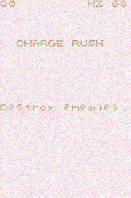

01 / PROJECT NOTE
项目介绍
我的项目是基于 CrispGameLib 教程中的原始射击游戏进行二次设计与改编。
原版游戏以单一敌人类型为主要攻击来源，敌人会发射追踪玩家的子弹。随着玩家存活时间增加，游戏难度逐渐提升。但在实际游玩过程中，我发现原版游戏存在敌人类型单一、战斗节奏缺乏变化，以及前期玩家容易陷入高压攻击等问题。
原版游戏演示

因此，本次改编将重点放在敌人行为设计、战斗节奏与玩家反馈机制上。引入不同类型的敌人、调整玩家攻击方式、增加击杀奖励与特殊武器机制，使游戏从单一弹幕躲避逐渐转变为具有不同战斗阶段的射击玩法。